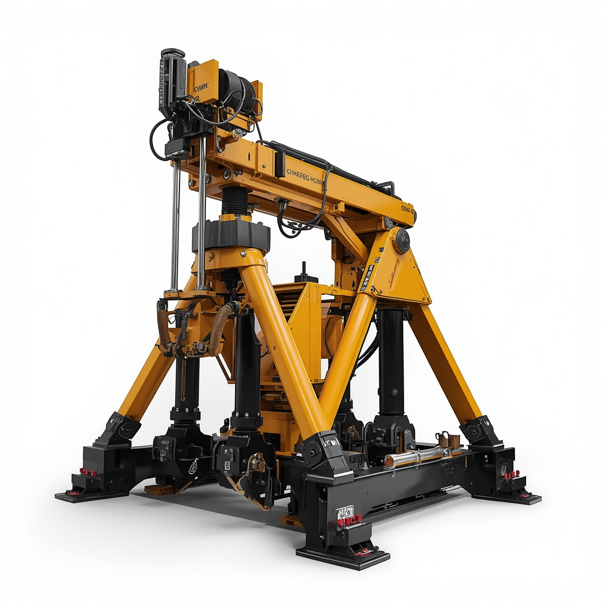
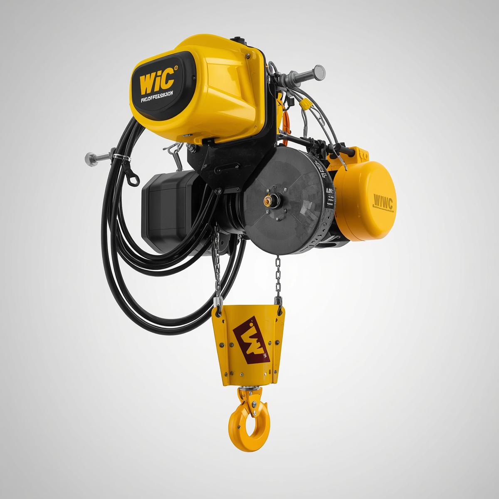

Our Products

Crawler cain
A crawler cain is a heavy duty liffiting machine which is built for maximum liffiting capacity and long term durabilty.

Heavy Duty-Minning Jacks
Heavy Duty-Minning jacks are powerfull tools designed to handle extreme loads in tough minning environments. they are built from high quality materials,they provide relaible suport,satability, and precision when liffiting or positioning heavy macheanary and equipment.

Hoist
A hoist is a mechanical device used to lift or lower heavy loads vertically using a drum or lift-wheel with chain or wire rope, commonly utilized in construction, warehouses, and automotive shops for precise material handling.

Whinchs
A which is a machenical divice used to pull,lift, or move heavy laods by wididning a cable or rope around a rotating drum. It is powered munnuly, electricaly or hydraulicaly, making it versitile for demanding environments like mines and constructions.